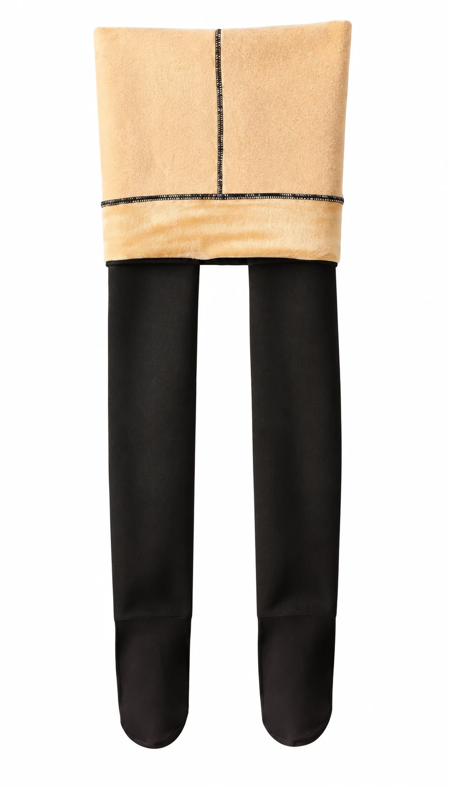

Colanti Termici cu Interior Moale pentru Damă
Colanți termici de damă, ideali pentru sezonul rece, concepuți pentru a oferi confort, căldură și un aspect elegant. Exteriorul negru, cu aspect de dres clasic, se combină cu interiorul moale, căptușit cu material plușat de culoare bej, pentru un plus de confort în zilele friguroase.
Produsul are stoc declarat 1000 buc. Prețul afișat de 17,00 Lei este orientativ, fără TVA. Confirmă disponibilitatea, prețul final și condițiile comerciale înainte de comandă.
DETALII PRODUS
Descriere
Colanți termici de damă, ideali pentru sezonul rece, concepuți pentru a oferi confort, căldură și un aspect elegant. Exteriorul negru, cu aspect de dres clasic, se combină cu interiorul moale, căptușit cu material plușat de culoare bej, pentru un plus de confort în zilele friguroase.
Datorită taliei înalte și materialului elastic, colanții se adaptează formei corpului, oferind o potrivire confortabilă și un aspect uniform. Pot fi purtați atât cu rochii și fuste, cât și în ținute casual de zi cu zi.
Caracteristici și avantaje
- Interior căptușit cu pluș moale – contribuie la menținerea căldurii în sezonul rece.
- Aspect elegant și feminin – exterior negru, cu efect vizual de dres.
- Talie înaltă – oferă susținere și confort în zona abdominală.
- Material elastic – se adaptează siluetei și permite libertate de mișcare.
- Design cu picior întreg – acoperă inclusiv laba piciorului.
- Versatilitate – potriviți pentru ținute casual, office sau elegante.
- Confort zilnic – ideali pentru sezonul de toamnă-iarnă.
- Mărime - universală!
Comandă și informații
Site-ul funcționează ca un catalog B2B. Nu există plată online sau coș de cumpărături. Stoc declarat: 1000 buc. Confirmă disponibilitatea și condițiile comerciale înainte de comandă.
Discută pe WhatsApp →